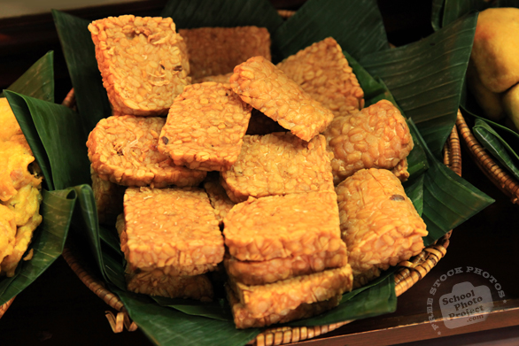

Fried Tempe

Description
Tempe, a trademark food from Indonesia. Made of fermented soybean, tempe can be found almost in entire region of Indonesia (and that's big, like, really big). Here, we wiil serve it in the simplest way, that is fried.
Ingredients
- 1 block plain tempe
- 4 cloves garlic
- 2 teaspoon of salt
- 1/2 cup hot water
- Vegetable oil
Steps
- Cut one block plain tempeh into several slices. Don't slice it too thick or to thin.
- Smash some garlic and put them into a bowl. Add some salt and pour 1/2 cup hot water.
- Marinate the sliced tempeh and leave them for about 10 minutes.
- While we're waiting, pour some vegetable oil on a frying pan. Heat it with medium-hight heat.
- When the oil is hot enough, take the sliced tempeh and then fry them.
- Don't forgent to flip them to fry the other side.
- When the tempeh are gold enough, put them on a plate.
- Serve them with steamed rice for your lunch.